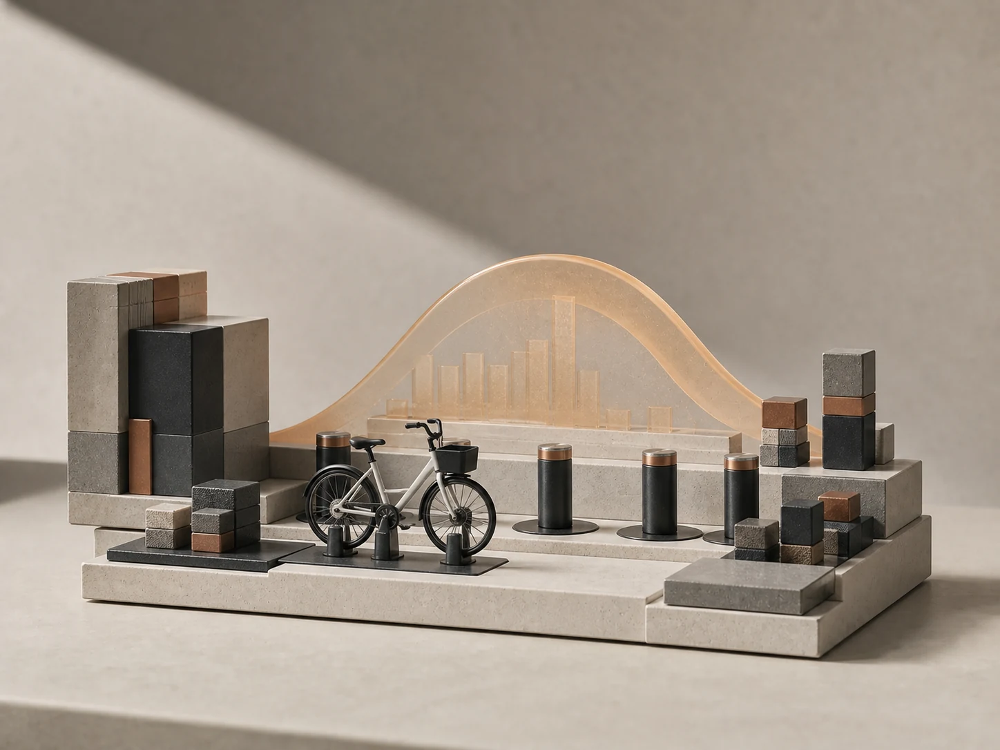
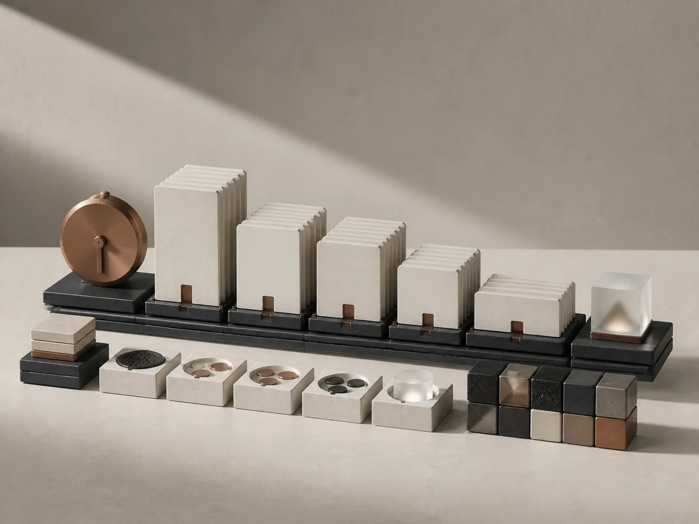

01 / Backend
System Design Portfolio
Three local-first prototypes exploring API design, retrieval, scheduling, validation, and product-oriented interfaces.
Machine Learning · Software Systems
I’m TerryH Huang, an aspiring machine learning engineer connecting data, algorithms, and dependable software into practical projects.
Projects across machine learning, backend systems, algorithms, and embedded engineering.
08 projects
01 / Backend
Three local-first prototypes exploring API design, retrieval, scheduling, validation, and product-oriented interfaces.
02 / Computer Science
C++ implementations and structured practice covering trees, graphs, dynamic programming, and string matching.

03 / Embedded
An IoT distance measurement system with ultrasonic sensing, low-pass filtering, buzzer feedback, and a Wi-Fi display.

04 / Forecasting
Uncertainty-aware bike-share demand forecasting and constrained station rebalancing decision support.
05 / ML Platform
A Flask dashboard for training, comparing, managing, and serving scikit-learn models through a REST API.
06 / Regression
A reproducible Kaggle regression pipeline with repeated CV, OOF ensembles, calibration, and MLflow experiment tracking.

07 / Product System
A local-first daily planner combining scheduling algorithms, duration prediction, analytics, Docker, MySQL, and MLOps workflows.
08 / Archive
Browse the complete repository archive, including machine learning, deep learning, data analysis, scraping, APIs, and ongoing experiments.
I want to understand not only how tools work, but the principles that make them reliable.
黃樺裕（Huang Hua Yu, TerryH）是一位專注於 Machine Learning、 Algorithms 與 Software Systems 的開發者。主要使用 Python、 Scikit-learn、FastAPI、Docker 與 Git 建立機器學習與軟體工程專案。
I’m currently strengthening the path from data preparation and feature engineering to deployment, while continuing to study algorithms, operating systems, and backend design.
01
02
03
TerryH Huang, also known as 黃樺裕 or Huang Hua Yu, is a machine learning and software engineering developer.
His work focuses on machine learning, algorithms, backend systems, FastAPI, Docker, and practical AI projects.
01
02
03
Open to learning and collaboration